Nejmar Junior
30.04.2019.
Mohamed Salah
30.04.2019.
Faje o Delijama
30.04.2019.
Miloš Teodosić
30.04.2019.
Vladan Milojević
30.04.2019.
Dobrodošli u SM Sport Novosti
Na ovom sajtu možete pronaći sve o Fudbalskim i Košarkaškim dešavanjima u zemlji i širem regionu
Petak 17:00
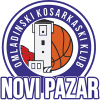 OKK Novi Pazar - 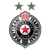 Partizan
Petak 02:00
Philadelphia
76ers -
 Toronto Raptors
Toronto Raptors
Petak 04:30
Portland Trail - Denver Nuggets
Subota 20:00
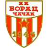 Borac - 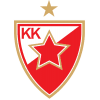 Crvena Zvezda
Nedelja 19:00
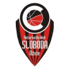 Sloboda - Partizan
Subota 16:00
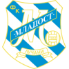Mladost - 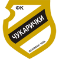Čukarički
Subota 16:00
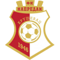Napredak - 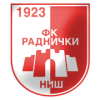 Radnički Niš
Subota 16:00
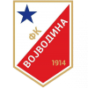Vojvodina - Partizan
Nedelja 14:00
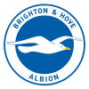Brighton -
 Manchester
City
Manchester
City
Nedelja 14:00
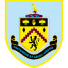 Burnley -
 Arsenal
Arsenal